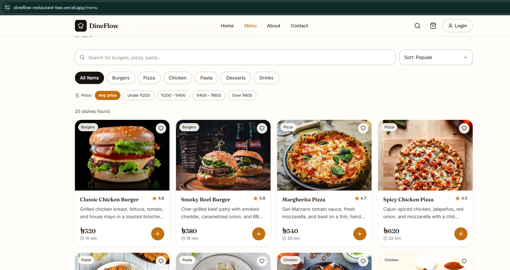
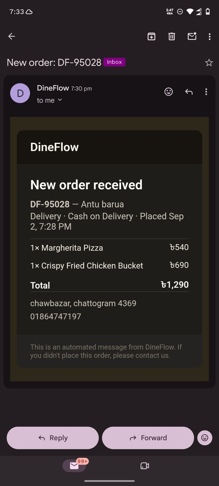
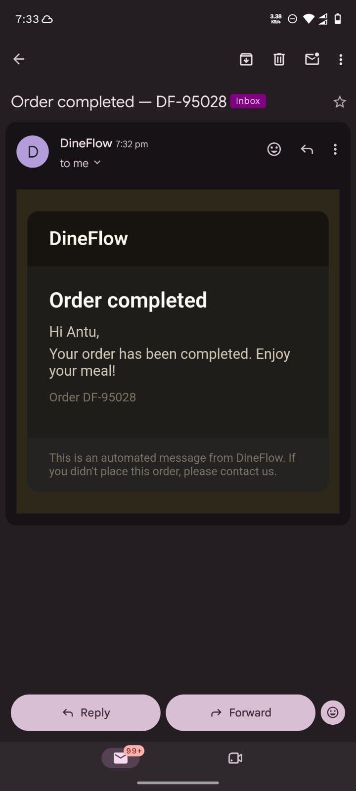

A production-grade restaurant SaaS: a customer ordering storefront and a full admin back office, backed by a real database, real authentication, a real payment gateway, real image uploads, and real transactional email — live in production, not a mockup.
DineFlow is a two-sided restaurant platform, built to the point where a real restaurant could actually run their ordering operation on it — not a portfolio demo dressed up to look finished. Customers browse a menu, order, pay online or on delivery, and track their order status in real time. The restaurant's team manages the entire menu, watches orders arrive live, updates order status through a pipeline, and gets automatic email alerts and analytics — all through an admin dashboard locked behind real authentication.
It was built deliberately in phases: a complete, realistic frontend first (to validate every user flow and get the design right before wiring anything up), then a systematic build-out of the real backend — database, authentication, payments, file storage, and email — each phase tested end-to-end in a live sandbox before moving to the next, and each one deployed and verified in production, not just locally.
Menu browsing with search & filters, cart, checkout with real online payment, live order tracking, order history behind login.
Role-protected dashboard: menu & category management with photo uploads, live order pipeline, payment reconciliation, sales analytics.
Postgres database, session-based auth, a real payment gateway, real file storage, and real transactional email — every "Phase" below is live.
No layer of this stack is a stand-in for "the real thing later" — the payment gateway processes real sandbox transactions with real validation, the email system sends real deliverable email, the auth system issues real sessions.
The live menu, pulling real product photos from cloud storage through the full search and filter UI.

Real automated emails, received in a real inbox, generated by a real order placed through the live checkout flow — not a mockup of what an email like this might look like.


Each phase was scoped, built, deployed, tested against real infrastructure, and confirmed working before the next one started — not a single big-bang rewrite.
Full customer + admin UI on realistic mock data, to validate every flow and get the design system right before touching a database.
PostgreSQL schema via Prisma, 15 REST API routes replacing every mock data source, with Zod validation on every input.
NextAuth.js sessions, bcrypt password hashing, route middleware, and server-side role checks on every admin-only endpoint.
SSLCommerz sandbox — hosted checkout, server-to-server transaction validation, and a webhook for reliability, with a full success/fail/cancel/retry flow.
Client-side image compression and cloud storage uploads for menu photos, replacing pasted stock-image URLs.
Automatic, fail-safe order confirmation, status-update, and restaurant-alert emails — verified via delivery logs, not just "it compiled."
Every piece of catalog and order state was routed through dedicated Context providers from the very first line of frontend code, shaped to match the eventual database schema. The entire admin CRUD experience was fully built and tested before a database even existed — migrating to real API calls later was a contained, predictable change, not a rewrite.
Supabase's connection pooler doesn't support prepared statements the way schema migrations expect. The project uses two distinct connection strings — a pooled connection for the running app (safe under Vercel's serverless concurrency) and a direct connection reserved for Prisma CLI migrations — avoiding a class of connection-exhaustion bugs common in serverless + Postgres deployments.
The checkout flow doesn't rely solely on the customer's browser redirecting back after payment — if their connection drops right after paying, that redirect might never happen. A server-to-server webhook (IPN) runs independently of the customer's browser as a reliable fallback, and both paths share the same idempotency guard so a payment can never be double-processed or double-emailed, no matter which path fires first — or if both do.
Every payment is re-validated server-to-server against SSLCommerz's own API before an order is ever marked paid — a redirect claiming success is never taken at face value. The admin dashboard is protected at two independent layers: route middleware that redirects unauthenticated or non-admin visitors before the page even renders, and a server-side role check on every single mutating API route underneath it, so the data layer is never exposed even if a UI-layer check were ever bypassed.
Photo uploads are resized and compressed in the browser using the Canvas API before they're ever sent to the server — deliberately avoiding a native image-processing library like Sharp on the server side, which introduces real deployment risk on serverless platforms. A 12MB phone photo typically becomes a few hundred KB before it ever leaves the customer's — or admin's — browser.
Every email send is wrapped so a provider outage or misconfiguration can only ever skip the email — never throw, never fail a checkout, never block an admin action. The product's core function always takes priority over a nice-to-have notification.
Checkout, registration, login, and the contact form are all rate-limited against abuse — but the limitation of an in-memory limiter on a serverless platform is documented directly in the code, not glossed over: it meaningfully raises the bar against a scripted attack without being a mathematically airtight distributed guarantee. Knowing the exact edges of a security control — and writing them down — matters more than appearing to have solved something completely.
Real engineering isn't writing code that looks right — it's catching what's wrong before a user does. A few examples caught during development and code review, not by a customer in production:
Order creation was briefly marking online payments as "paid" immediately at checkout, before the customer had even reached the payment gateway. Combined with how the failure-handling logic worked, this would have permanently prevented an abandoned or declined payment from ever being correctly marked as failed. Fixed before deployment — every order now starts pending regardless of payment method; only a validated gateway confirmation marks it paid.
The original schema required every menu item to belong to a category with no way to remove that link — meaning deleting a category with active menu items would fail at the database level with a constraint error, contradicting what the admin UI already promised the user. Fixed by making the relationship optional with a proper cascading behavior, before it ever reached a real admin's hands.
A production build on Vercel caught a genuine type mismatch between seed data and an evolved database schema that local development never surfaced — Next.js's production build runs a full TypeScript check that dev mode skips for speed. Fixed and redeployed the same day.
An early version of the status-update email logic compared the frontend's status format against the database's raw format directly — two values that could never be equal as strings, which would have fired a "status changed" email on every single admin action regardless of whether the status actually changed. Caught on re-read before shipping, fixed by normalizing both sides to the same format before comparing.
| Area | Status |
|---|---|
| Frontend UI (customer + admin) | Live |
| Database & API layer (PostgreSQL + Prisma) | Live |
| Authentication & role-based admin access | Live |
| Payment gateway (SSLCommerz, sandbox) | Live & verified |
| Image uploads (Supabase Storage) | Live & verified |
| Transactional email (Resend) | Live & verified |
| Deployed on Vercel, tested in production | Live |
| Security hardening (rate limiting, auth audit, access control review) | Live |
| Contact form (real email delivery) | Live |
| Full QA pass across devices | Planned |
| Client handover documentation | Planned |
The remaining work is deliberately about readiness, not features: a security-hardening pass across every API route (rate limiting, dependency audit, a final review that no customer can ever read another customer's data), a full device-by-device QA pass, and client-handover documentation — an admin user guide, credential transfer, and a support plan — so this isn't just a working product, but one a real, non-technical restaurant owner could actually run their business on.